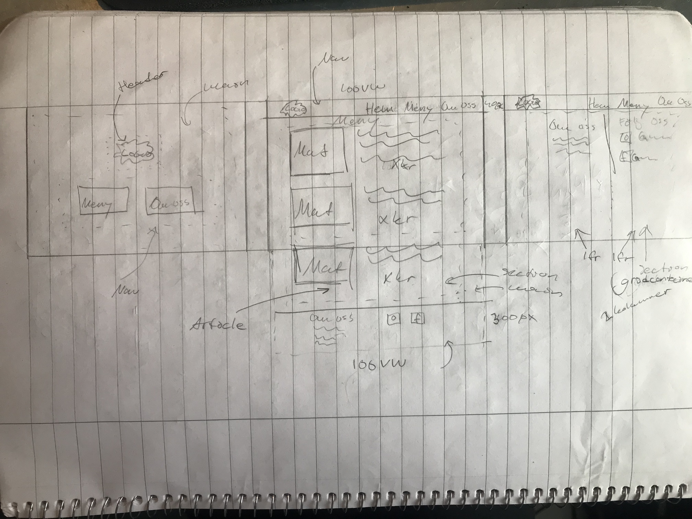
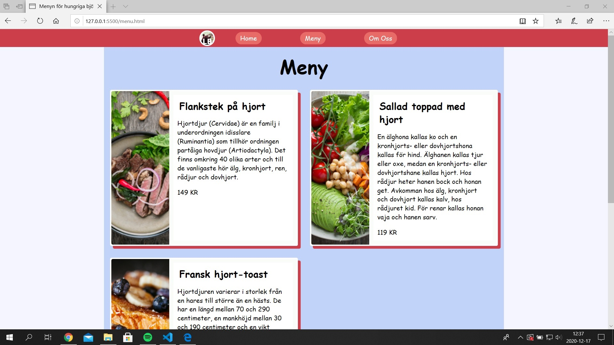
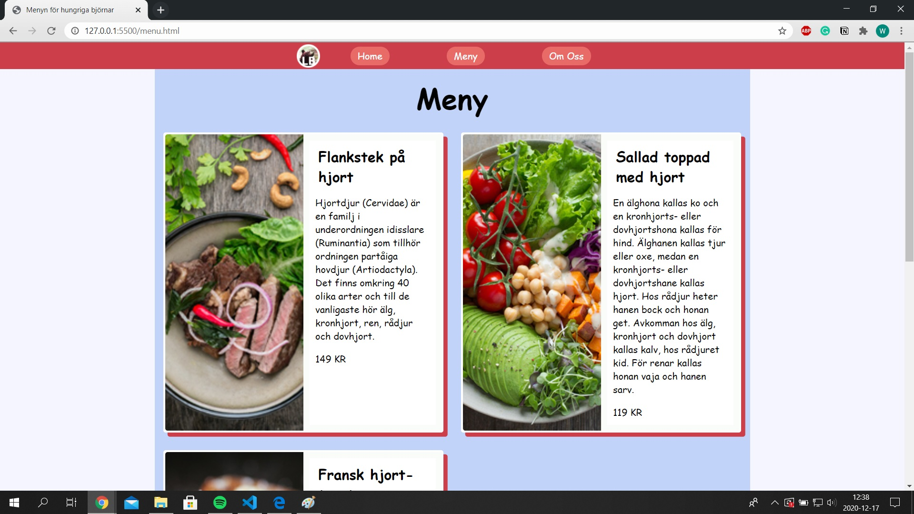
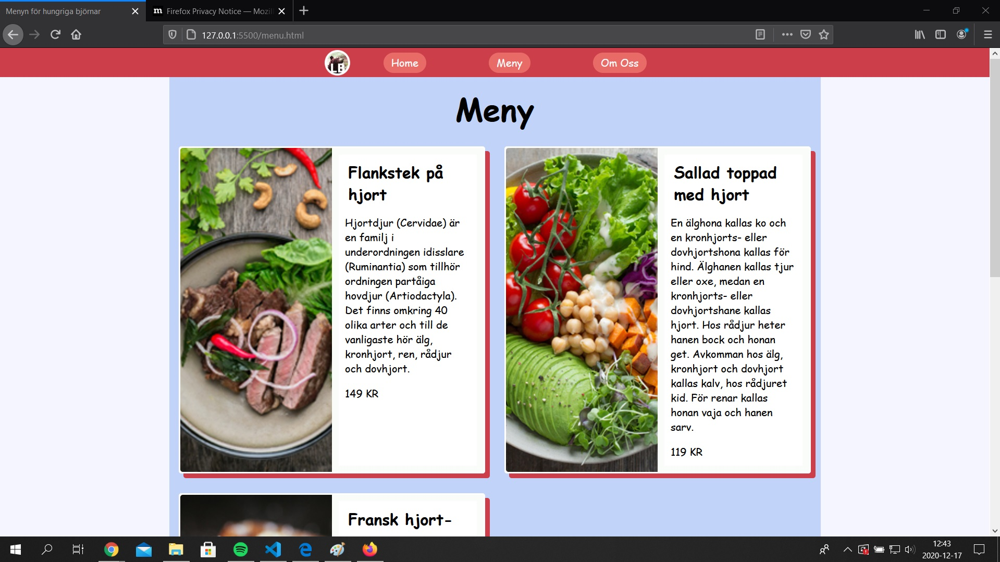

Dokumentation projekt HT
1. Idébeskrivning
Jag ska göra en restaurangsida med följande HTML-sidor:
- Startsida (index.html)
- Menysida
- Om oss sida
Startsidan ska vara lika stor som fönstret och ha loggan ungefär i mitten med en navbar under. Navbaren ska ha ganska stora knappar.
Menysidan och om oss sidan ska ha nav:en längst upp på sidan där man kan navigera mellan de tre sidorna.
Menysidan ska ha bilder på maträtter med varsin text som förklarar maträtten samt pris. Längst ner ska det finnas en footer med kontaktinformation och social media information.
Om oss sidan ska ha två kolumner: En med restaurangens bakgrund och en med kontaktinformation.
Längst ner ska det finnas en footer bara med sociala medier knappar.
Målgruppen är för familjer med småbarn. Sidan ska ha ett typsnitt som ser ganska oproffensionellt ut och tillsammans med färgglada färger kommer sidan se barnslig ut.
2. Planering
2.1 Handskiss

2.2 Schema
| Vecka | På lektionerna | Utanför lektionerna |
| 47 |
* Skissa klart hemsida och eventuella mått
* Bestäm vilka boxelement att använda
* Börja programmera och bli nästintill klar med första sidan
|
* Skissa hemsidan
* Skriva planering
|
| 48 |
* Styla klart menysidan
* Hitta passande bilder på unsplash samt redigera dem
|
* Lägg till bild på skiss
* Gör klart footer i meny.html
|
| 49 |
* Börja koda about.html
* Skapa en logga för sidan
|
|
| 50 |
* Finslipa html + css
|
|
| 51 |
* JS funktioner för skojs skull
* Testa med valideringsverktyg
|
* Ny logga som är anpassad för att vara i mindre format
|
3. Dokumentation
Lektioner vecka 47
Lektion 1: Jag har börjat funderat på hur min sida ska se ut genom att kolla på hur andra restaurangsidor ser ut.
Lektion 2: Jag har gjort snabbt kastat ihop ett första utkast på första sidan och meny-sidan. Jag märkte att det var svårt att styla när jag inte visste vilka färger jag skulle ha ännu, så än så länge har jag endast valt färger så att jag kan se vart alla element placeras i förhållande till varandra. Det vore bra om jag gör en mer detaljrik skiss med färg, så jag kanske gör en med Adobe XD eller något liknande program.
Lektioner vecka 48
Lektion 1: Jag har hittat bilder som jag har exporterat till lämplig filstorlek samt lagt till dem på sidan. Jag har också stylat menu.html och börjar få något som ser hyffsat bra ut.
Lektion 2: Jag har valt ut e blå färg och en ljusare som jag har stylat backgrunden till och även den innersta delen av sidan med all content. Jag har också börjar koda en lista i footern med länkar till restaurangens sociala medier.
Lektioner vecka 49
Lektion 1: Jag gjorde en logga i psd. Men jag tyckte den inte blev så bra eftersom texten syntes inte eftersom den är så liten i naven. Istället för att göra naven större kommer jag göra en ny logga, antingen hemma eller på lektion nästa vecka. Jag behöver tänka på att använda en större font eller använda initialer. Jag kodade även about.html där jag först kopierade in naven och footern. Sedan gjorde jag en enkel grid där jag hade två kolumner med olika info.
Lektion 2: Jag har gjort en liten JS script som gör naven mindre när man skrollar. Jag insåg att det var mycket som jag ville ändra i klassen "small_nav" som bestäms i id:t därför blev jag tvungen att skriva !important på vissa värden för att få dem att prioriteras. Jag kunde ha gjort "small_nav" till ett id också för att skippa att skriva !important, som sedan kan bli jobbigt och man borde helst undvika det, men det kanske jag gör om jag får tid över.
Lektioner vecka 50
Lektion 1: Jag har finslipat sidan lite grann. Bland annat har jag fixat alt-attribut på bilderna, flyttat psd-filerna till misc och uppdaterat dokumentationen så att jag har en planering för v.51.
Lektion 2: Jag har fixat till en om oss ruta i footern på menysidan därför att det var så det var tänkt från början. Dessutom har jag lagt till en rät linje mellan de två kolumnerna på aboutsidan, samt jobbat med en animation när man går ni på menysidan så att rätterna slidar in från sidorna. Jag märkte att nth-child kollar vilket index barnet och ändrade så att det blev rätt.
Lektioner vecka 50
Lektion 1: Jag har testat med hjälp av olika valideringsverktyg och webbläre.
4. Testning
Jag har testat i Edge, Chrome och Firefox. Resultatet skiljde sig inte utöver att min scrolla upp funktion skrollar driekt upp i Edge istället för att långsamt skrolla upp. Men det tänker jag inte är så viktigt att fixa.



HTML-check:
about.html - inga error
//
index.html - Varning som säger att sen section inte har en titel. Jag behåller det så jag har eftersom jag vill att titeln jag redan har ska vara utanför det rosa/röda området.
//
menu.html - samma varning som i index.html Jag kommer återigen behålla det så jag har det trots varningen eftersom den sectionen som inte har en titel är en grid wrapper och jag skulle inte vilja att titeln är en del av griden.
CSS-check:
style.css - Fick varningar på mina variabler. Jag antar att det är något jag bara kan ignorera eftersom det står "Egenskap -- är inte en känd leverantörsutvidgning."
Hade gett värdet 'none' till 'font-style' vilket gav ett error. Jag vet inte vad jag hade försökt att göra, men jag tog bort den raden.
Skrev '2p' istället för 2px på rad 150. Tog bort hela raden istället eftersom jag ville inte ändra egenskapen kom jag på.
Tillsist fick jag error på raden då jag importerade en google font. Jag vet inte hur jag ska lösa det, men eftersom det funkar när jag kollar på sidan antar jag att jag kan låta det vara så.
Contrast-check:
När jag testade kontrasten mellan den rosa/röda färgen och vitt fick jag ett väldigt lågt poäng. Just för menyknapparna gör det inte så mycket eftersom det är nästan bara ett ord som man läser. Däremot i footern kan det vara lite bättre att använda sig av färger som ökar läsbarheten. Därför gjorde jag 'secondary-color' mycket mörkare för att öka kontrasten. Då fick jag 4/6 gröna markeringar. Jag gjorde även de andra färgerna lite mörkare också för att få det att matcha lite bättre. Välkomstexten fick då 1/6 av markeringarna på grönt, så jag ändrade textfärgen till svart och fick då 6/6 på grönt.
5. Utvärdering (skrivs i slutet av arbetet, innan inlämning)